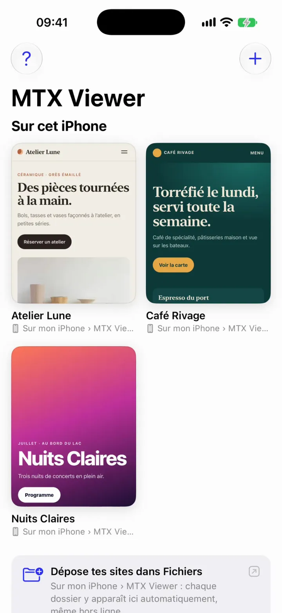
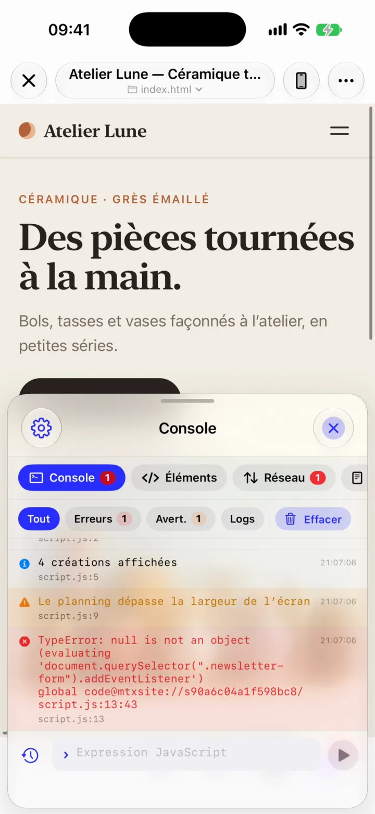
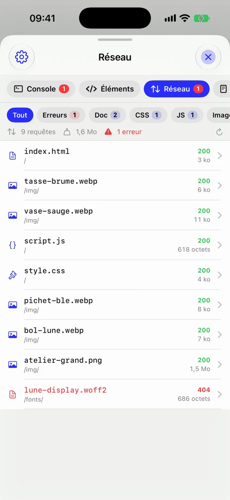
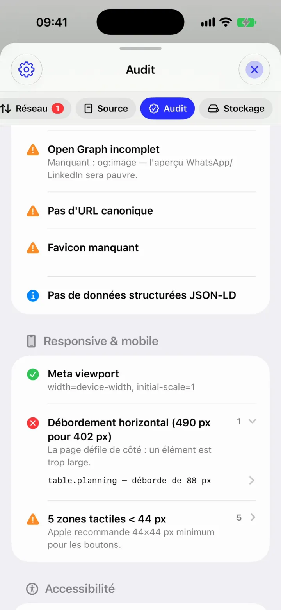
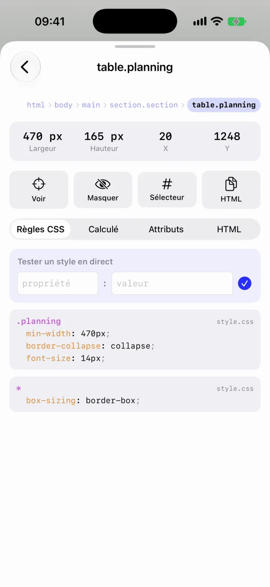
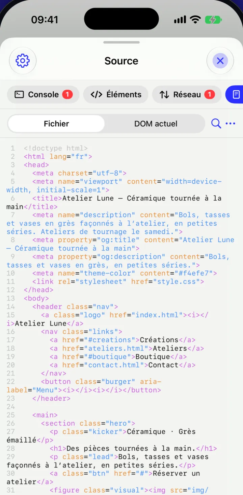
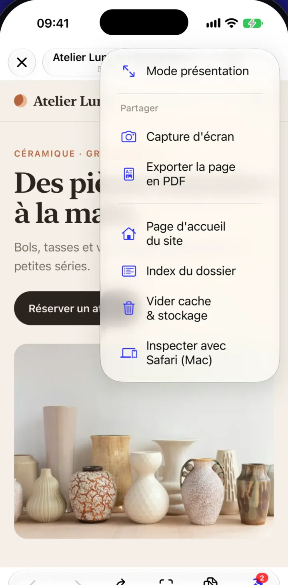

Explorez un site web sous tous ses angles, depuis votre iPhone.
Votre site est-il aussi réussi sur téléphone que sur ordinateur ? Ouvrez-le sur iPhone ou iPad, qu’il soit en ligne ou encore en chantier : regardez comment il s’affiche, voyez comment il est construit, repérez les erreurs et testez-le en format téléphone, tablette ou grand écran.
MTX Viewer · iPhone et iPad · iOS 27
- Console
- Éléments
- Réseau
- Source
- Audit
- Stockage
Pourquoi vérifier l’affichage
Beau sur ordinateur, cassé sur téléphone ?
Cela arrive plus souvent qu’on ne le croit, et beaucoup de visiteurs arrivent par leur téléphone. Ouvrez votre site sur iPhone ou iPad pour voir exactement ce qu’ils verront, et repérer les textes, menus ou images qui s’affichent mal.
MTX Viewer réunit sur iPhone et iPad les outils pour explorer une page et comprendre ce qui se passe en coulisses, sans avoir besoin d’un ordinateur.
Ouvrir un site
Ouvrez un site, qu’il soit en ligne ou dans vos fichiers.
Ouvrez le dossier de votre site directement depuis vos fichiers. MTX Viewer garde le lien avec ce dossier : après une modification, rechargez la page pour voir le résultat.
iCloud DriveSitesatelier-luneindex.html
-
Choisir un dossier de site
Choisissez le dossier de votre site : MTX Viewer affiche sa page d’accueil.
-
Sur cet iPhone
Glissez vos dossiers dans Fichiers › Sur mon iPhone › MTX Viewer : ils apparaissent tout seuls, même hors ligne.
-
Plusieurs sites au même endroit
Placez plusieurs dossiers de sites dans un dossier commun : MTX Viewer les affiche sous forme d’une liste à ouvrir.
-
Ouvrir une adresse web
Entrez l’adresse d’un site en ligne, ou celle d’un projet lancé sur un ordinateur du même réseau Wi-Fi.

Explorer les outils
Explorez le code, les erreurs et les fichiers de votre site.
Une erreur s’affiche, une image ne charge pas, la page déborde de l’écran : suivez un exemple concret, étape par étape. MTX Viewer vous montre d’où vient le problème, dans le code, les fichiers chargés ou l’élément concerné.
-
Console
Repérez l’erreur et la ligne concernée.
La console affiche les erreurs de la page, les fichiers manquants et les messages du site. Vous pouvez aussi y tester du code JavaScript et voir le résultat aussitôt.
TypeError: null is not an objectscript.js:13:43

-
Réseau
Voyez quels fichiers la page charge.
Images, polices, styles et scripts : repérez ceux qui ne se chargent pas et consultez leur taille.
lune-display.woff2404

-
Audit
La page dépasse de l’écran ? Trouvez l’élément responsable.
L’audit mesure le dépassement et vous conduit directement à la partie trop large.
table.planning490 px pour 402

-
Éléments
Touchez une partie pour voir sa taille et son style.
Consultez ses dimensions, son apparence et les réglages qui la modifient. Essayez une valeur avant de changer le fichier.
.planningmin-width: 470px

-
Source
Consultez le code de la page.
Affichez le fichier d’origine ou la page telle qu’elle apparaît après chargement. Le code est coloré, numéroté et facile à copier.
FichierDOM actuel

Et les données enregistrées : consultez les préférences et cookies propres à chaque site. Rien ne se mélange entre vos projets.
Gardez l’historique : retrouvez les erreurs et les fichiers chargés d’une page à l’autre pour suivre un parcours complet.
Tester plusieurs écrans
Du téléphone au grand écran, testez l’affichage de votre site.
Choisissez un format de téléphone, de tablette ou d’ordinateur : voyez comment la page s’y affiche, directement sur votre iPhone ou iPad. Repérez les textes trop petits, les menus qui se chevauchent ou les éléments qui dépassent, sans changer d’appareil.
Téléphone : le site s’affiche à la largeur de votre iPhone.
Vérifier avant de partager
Avant la mise en ligne, un dernier contrôle.
Avant de partager votre site, MTX Viewer vérifie les points souvent oubliés : affichage sur mobile, liens et images, taille des boutons, informations de partage et erreurs de la page. Un score résume ce qui fonctionne et ce qui mérite votre attention.
Ce contrôle aide à repérer les oublis courants. Il ne remplace pas une vérification complète de l’accessibilité ou des performances.
60Score qualité
- 11
- 8
- 6
Exemple : Atelier Lune, rendu mobile
Extrait du rapport
Page et partage
- RéussiTitre (42 caractères)
- RéussiDescription dans les résultats (102 caractères)
- RéussiUn seul titre principal
- RéussiTitres bien organisés
- RéussiLangue du site indiquée : français
- À revoirAperçu de partage à compléter pour WhatsApp ou LinkedIn
- À revoirAdresse principale de la page non précisée
- À revoirIcône du site manquante
- InfoInformations supplémentaires pour les moteurs de recherche absentes
Affichage sur téléphone
- RéussiAffichage adapté à la largeur de l’écran
- ProblèmeLa page dépasse sur les côtés (490 px pour 402 px)
- À revoir5 éléments difficiles à toucher (moins de 44 px) Apple recommande 44 × 44 px minimum
Accessibilité
- Problème1 image à décrire pour les outils de lecture d’écran
- À revoir1 champ à nommer pour les outils d’assistance
- RéussiLes boutons ont une description claire
Le rapport vérifie aussi que les images ne manquent pas ou ne sont pas trop lourdes, que les liens fonctionnent, que les scripts ne signalent pas d’erreur et que les fichiers se chargent correctement.
Voir MTX Viewer en action
Trois vidéos, moins d’une minute.
Ouvrir un site, repérer ce qui pose problème, tester son affichage sur téléphone, tablette ou ordinateur : regardez l’app à l’œuvre.

Présenter et partager
Présentez votre site en plein écran, capturez-le ou partagez-le en PDF.
Un client, un collègue, un ami à convaincre ? Montrez la page sans les outils d’inspection, ou envoyez-lui une capture et un document PDF.
- Mode présentation
- Affichez la page en plein écran, sans la barre ni les outils de MTX Viewer.
- Capture et PDF
- Enregistrez une image de la page ou créez un document PDF à partager.
- La bibliothèque
- Retrouvez vos sites au même endroit, chacun avec son aperçu. Ceux enregistrés sur votre appareil restent accessibles même sans connexion.
- Safari sur Mac, si besoin
- Pour aller plus loin, reliez la page ouverte dans MTX Viewer à l’inspecteur web de Safari sur votre Mac.
Questions fréquentes
Questions fréquentes.
Vos fichiers restent sur votre iPhone ou iPad.
MTX Viewer ouvre vos dossiers directement sur l’appareil, sans compte ni envoi vers un serveur. Quand vous ouvrez un site en ligne, il utilise Internet pour charger cette page.
Chaque site garde ses propres cookies et préférences : ses données ne se mélangent pas avec celles des autres.
Quels sites peut-on ouvrir ?
Un site déjà en ligne, un fichier HTML seul ou un dossier de site. Pour un projet en cours, ouvrez son adresse sur le même réseau Wi-Fi. Les sites construits en HTML, CSS et JavaScript peuvent aussi s’ouvrir directement depuis leurs fichiers.
Faut-il un Mac ?
Non. MTX Viewer inclut les outils pour explorer et vérifier un site sur iPhone ou iPad. Un Mac sert seulement si vous voulez utiliser l’inspecteur de Safari ou ouvrir un projet lancé sur cet ordinateur.
Mes modifications apparaissent-elles tout de suite ?
Oui. Si vous avez ouvert un dossier, enregistrez vos changements puis rechargez la page dans MTX Viewer. Si votre projet est lancé sur un ordinateur du même réseau Wi-Fi, rechargez-le comme d’habitude.
Peut-on tester du code dans l’app ?
Oui. La console permet d’exécuter du JavaScript sur la page ouverte et d’en voir le résultat. Elle affiche aussi les erreurs et les fichiers qui n’ont pas pu se charger.
L’audit garantit-il que mon site est prêt ?
Non. Il repère les oublis fréquents avant de partager le site, mais ne remplace pas une vérification complète de l’accessibilité ou des performances.
Sur quels appareils ?
iPhone et iPad, avec iOS 27 ou plus récent. L’app est en préparation pour l’App Store.
Bientôt, explorez vos sites sous tous leurs angles.
MTX Viewer arrive bientôt sur l’App Store pour iPhone et iPad. Vous avez un site à tester ou une question ? Écrivez à MTX Studio.